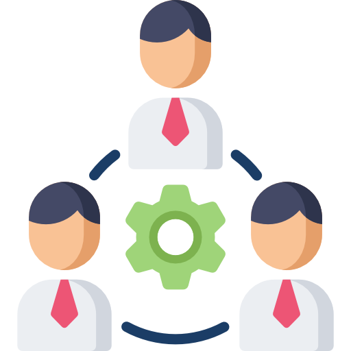

Mes Qualités :
Travail d’équipe :
Lors de différents projets en binômes j’ai pu réellement apprendre ce qu’ était le travail d’équipe.
Par exemple lors de mon projet final de terminale qui portait sur la réalisation d’une borne d’accueil qui donnait un itinéraire dans un bâtiment j’ai travaillé avec 4 personnes.
Nous nous étions réparti les tâches ce qui demandait de la coordination.
En effet il fallait que tout le monde soit dans les délais parce que chaque travail complétait celui d’un autre.
Autonome :
Dans cette formation il y à beaucoup de recherche à faire nous même en tant que travail personnel,
mais aussi en cours au cours de différents TP où tout n’est pas inscrit dans le cours et qu’il faut chercher sur internet,
comme lors des TPs de réseau où il faut trouver les commandes pour configurer un routeur, switch ...
Polyvalent
Au cours de ce début de formation j’ai pu apprendre qu’une des qualités principale était la polyvalence c’est à dire le fait de pouvoir s’adapter dans n’importe quelle situation tels que lors d’un problème commun ou peu commun mais encore dans une situation inconnue où l’information est la clé,
ce qui rejoint qui faut être autonome comme lors des TPs en Telecom qui sont tousses différents,
où il faut donc s’adapter dans chaque thèmes.
